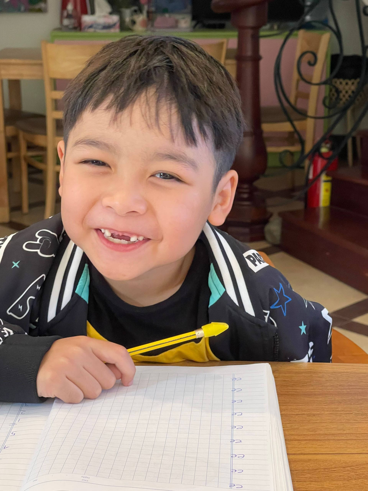

Every child begins their English journey at a different point. Some students are learning letter sounds and beginning to read independently. Others need support with writing, academic vocabulary, and critical thinking. Older students may be preparing for IELTS examinations or future international study opportunities.
At Spark, students do not move through disconnected courses or random levels. Instead, they follow a clear, structured learning pathway that builds literacy, communication, academic writing, and critical thinking skills over time. Each stage prepares students for the next, creating confident learners who are ready for success both inside and outside the classroom.

Phonics & Literacy
Pre-A1 → A1
Learning to read: sounds, blending, decoding, early writing.
Program details →IB English Program
B1 → C1
Academic reading, analytical writing and critical thinking for international school.
Program details →Our Approach
Four programs, one journey. Select a stage to see what students develop and the outcome it prepares them for.

Building the Foundation for Reading Success
Reading is the foundation of all future learning. Before students can write strong essays, analyze literature, or prepare for examinations, they must first develop the ability to read accurately, fluently, and confidently. Students learn how sounds connect to letters, how words are formed, and how meaning is created through reading and writing.
Students develop
- Sound awareness
- Letter-sound relationships
- Blending and decoding
- Reading fluency
- Vocabulary development
- Writing foundations
- Reading comprehension
- Storytelling skills
Outcome
Students become independent readers with the literacy skills needed to access increasingly complex texts.

Building Functional and Academic English
Once students have developed strong literacy foundations, they begin expanding their English communication skills. The Spark ESL Program follows CEFR standards and supports students from Pre-A1 through B2 — from basic communication to confident, independent English use.
Students develop
- Communicate clearly and confidently
- Complex grammar structures
- Expanded vocabulary
- Participate in discussions
- Write structured texts
- Express opinions and ideas
- Understand academic language
- Independent speaking
Outcome
Confident English communicators who can use English effectively in both academic and real-world situations.

Developing Strong Readers, Writers, and Thinkers
Academic success requires more than speaking English fluently. Students must learn how to analyze information, organize ideas, write effectively, and engage with increasingly sophisticated texts. The Spark Pathway Program focuses on the academic skills students need in international school environments and higher-level English studies.
Students develop
- Grammar accuracy
- Paragraph writing
- Multi-paragraph writing
- Academic vocabulary
- Analytical reading
- Literary discussion
- Evidence-based responses
- Formal essay writing
- Research and evaluation
Outcome
Students become confident academic readers, writers, and thinkers.

Preparing for International Opportunities
The final stage prepares students for IELTS success and advanced academic communication. Unlike exam-prep programs that focus only on test techniques, Spark develops the underlying language skills that lead to long-term success, progressing through CEFR-aligned stages from B1 to C2.
Students develop
- Academic writing
- Essay structure
- Reading comprehension
- Listening skills
- Academic vocabulary
- Critical thinking
- Argument development
- Discussion and presentation
Outcome
Depending on starting point and goals, students progress through Band 4.5–5.5 foundations, Band 5.5–6.5 development, Band 7–8 advanced performance, and Band 8.5–9 mastery.
What Makes Spark Different?
Many English programs focus on isolated skills or short-term outcomes. Spark follows a complete literacy-to-academic pathway. Every stage builds upon the previous stage.
Rather than teaching English as a collection of disconnected skills, we help students develop the literacy, communication, and academic abilities needed for long-term achievement.
- Phonics develops reading.
- Reading develops vocabulary.
- Vocabulary strengthens writing.
- Writing supports critical thinking.
- Critical thinking prepares students for academic success.
Where Is Your Child on the Roadmap?
Every student’s journey begins with understanding their current level. Our assessment identifies strengths, learning gaps, and the most appropriate starting point within the Spark Roadmap — with a personalized learning plan.